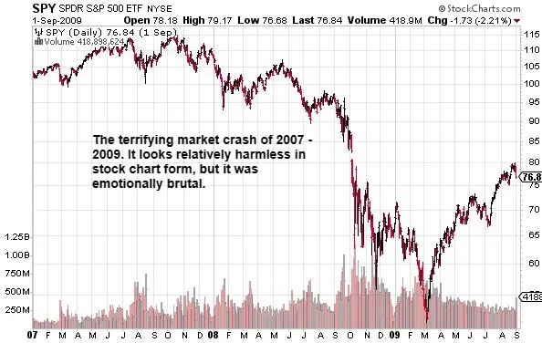

Before I talk about Betty, a quick intro and a backstory. It is generally accepted that traditional buy & hold with index funds can make you rich. If so, why do ‘average’ people fail with traditional buy & hold? It’s because with buy & hold, we have no insurance. We put ourselves in a position to lose a great deal of money in a market crash, and we don’t like the pain of losing lots of money. We view it as a punishment versus a fee we pay to participate in the gains of the stock market.
It’s also unwise to put yourself in a position to lose all your money without any insurance or protection in place. We know this at an instinctual level, but we often don’t have the tools to do anything about it. Or either we don’t know that the tools exist. Sadly, the tool to prevent stock market losses has existed since the 1970s. It’s called a stock option. More specifically, protective put options.
So again, yes, buy & hold works, mathematically and historically. You can get rich following the standard buy & hold wisdom if you stay steadfast and don’t deviate from it. And that’s the flaw. Staying steadfast when losing money does not align with how most people’s brains are wired. This is plainly illustrated through Betty’s story . . .
I was at a church dinner party, and we were doing intros and icebreakers. One of the guests asked a variation of the following question: “If money wasn’t a factor, what would you choose to do as a career?” I’m a hardcore introvert and generally a shy person. Thus, I was the last to answer. I was also hesitant to give my answer, and you are about to see why . . .
I was the only person at the table who replied with: “I’d do exactly what I’m doing right now.” As expected, I got looks of both envy and disgust. However, one brave lady, who wasn’t busy hating on me, asked me what I did for a living. Ugh, I hate that question, and here is why . . .
Regardless, I usually reply to that type of question with something like: “I’m an investment educator. I help people understand stock market investing.” The replies to that vary, but here was the reply this night. She said, “Oh, the stock market! To be honest, I don’t understand investing, and now I’m scared to invest because my mom lost all of her money in the stock market.”
Of course, that piqued my interest, so I politely asked her to elaborate. The following story she shared broke my heart, and it’s one of the many reasons I now write these kinds of books. It’s selfish for me to keep this information to myself while people like Betty suffer due to a lack of knowledge. Here is her story . . .
To protect her privacy, I am calling her Betty, and she was a recent widow. Her husband, the sole income earner in the house, passed away in 2007. Like most Americans, they lived paycheck to paycheck and found it hard to save on the little income they brought in. Thus, Betty had little to no retirement or personal savings when her husband died.
Lucky for her, there was a life insurance policy. The money she received from the policy was all she had. She had to pay her bills, and the money needed to last long enough to take care of her for the rest of her life.
So let me stop here and ask you to empathize with Betty. Your significant other has recently passed away. You’re most likely grieving and can’t think at an optimal level. You’ve also never had a large sum of money before, and you have no clue what to do with it. So what do you think someone like Betty would do—aside from consulting family and friends?
Would she buy a book like this one to learn how to manage money? No! There is no time for that. Her problem is immediate and pressing, and she fears she might make a mistake and lose all the money. That’s a risk she can’t afford to take. So, she does what many in her situation do; she goes to a financial advisor, usually a local one in her hometown.
I’m unclear on ‘who’ told Betty to put most of the money into the stock market, but she did. Over time, the stock market is one of the best places to park money for long periods of time. The growth achieved would help the money last longer for Betty. In theory, it was an adequate plan, but the reality was much uglier. Remember, this was in 2007.

Figure 4 The Bear Market of 2007–2009, Source: StockCharts.com
No one could have predicted how bad the market crash of 2007–2009 would be. Even the best forms of diversification didn’t save people’s portfolios from getting demolished. Remember, Betty has no source of income. Her husband, the sole income earner, is deceased, and she’s still mourning. The financial gift her husband left her is now at risk of being wiped out. So what would you have done if you were Betty, in her vulnerable position, and watching the only money you had to your name evaporate?
Would you have held steady and not sold your stocks, as a financial advisor would recommend? Remember, most financial advisors get paid whether you make money or not. Your portfolio is ‘their’ cash cow, so they are motivated to keep you invested for as long as possible.
But in defense of advisors, yes, if you hold your stocks for the long term and don’t sell during down markets, you will usually recover your losses. However, if you have invested for over five years, you know the flaw in that plan. It doesn’t work with human nature!
Humans, by and large, hate the pain of losing money. They will do everything in their power to avoid it. Yes, a few unicorns have the emotional fortitude to watch 50% of their money disappear, and it does not bother them. But the ‘average’ person in Betty’s situation cannot tolerate that kind of loss. The average person will not just toughen up and deal with it. Most people would go crazy, and their irrational brains would take over, and they may do something like cash out their stocks during a crash.
And usually, right after they sell to stop the pain, the market starts to go back up. Sigh! I can’t tell you how often I’ve seen that story play out. Thus, a better method than buy and pray is buy and insure. We are already programmed to buy insurance for cars and homes, so buying insurance for stocks takes advantage of programming that is already in place.
But Betty, like most, didn’t even know that you could insure your stock portfolio. Worse than that, most financial advisors aren’t allowed to use puts to protect their client’s portfolios. Don’t even get me started on how backward that is. You manage money for a living, but industry regulations prevent you from buying insurance for your client’s accounts (shaking my head).
Anyhow . . . What do you think Betty did?
Yup, she freaked out and cashed out in early 2009, right when the market was bottoming and about to go higher. It would continue to go up for the next 13 years. If Betty didn’t cash out, she would have been okay. But since none of us can predict the future, she made what she thought was the best choice at the time—salvage what little money she had left. I don’t know if Betty got back into the stock market, but I doubt it. I swear, I almost cried hearing that story. I hate seeing elders suffer.
Maybe I can’t save the Bettys of the world, but hopefully, I can reach their kids or loved ones. Maybe you can develop the skills necessary to manage money successfully. Then you can help the Bettys of your family. Let’s commit to making the world a better place for our aging population who missed out on all this knowledge. Betty losing that much money, and having that kind of experience, was utterly unnecessary and didn’t need to happen. But how do we prevent this from happening to us?
We do it by finding a way to invest that doesn’t trigger our emotions.
We find a method where the max we can lose in any crash is so small that we won’t be triggered emotionally.
More specifically, we find a way to make money when markets crash.
If you look at your portfolio during a bear market and see that you are making money, would you be tempted to cash out all of your investments? Uh, no, because you would not need to. And the best tool I have found that accomplishes all the above is put options. And now that we have covered puts, let’s move on to discuss what I use for the buy & hold component of the EBH portfolio.